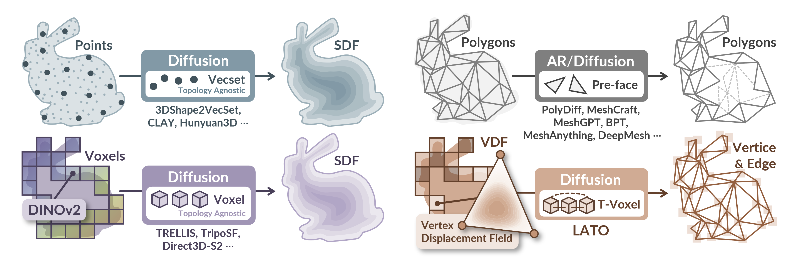
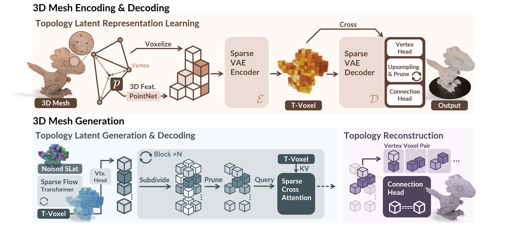
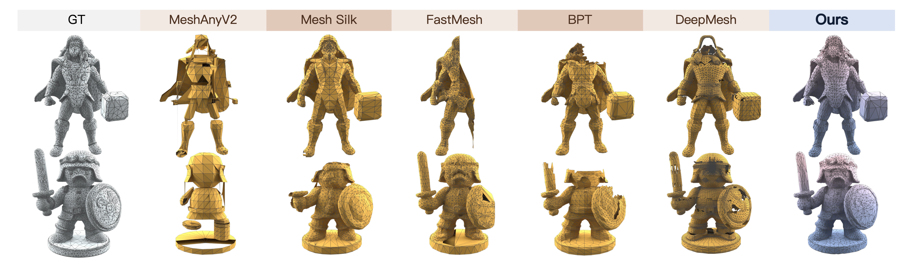
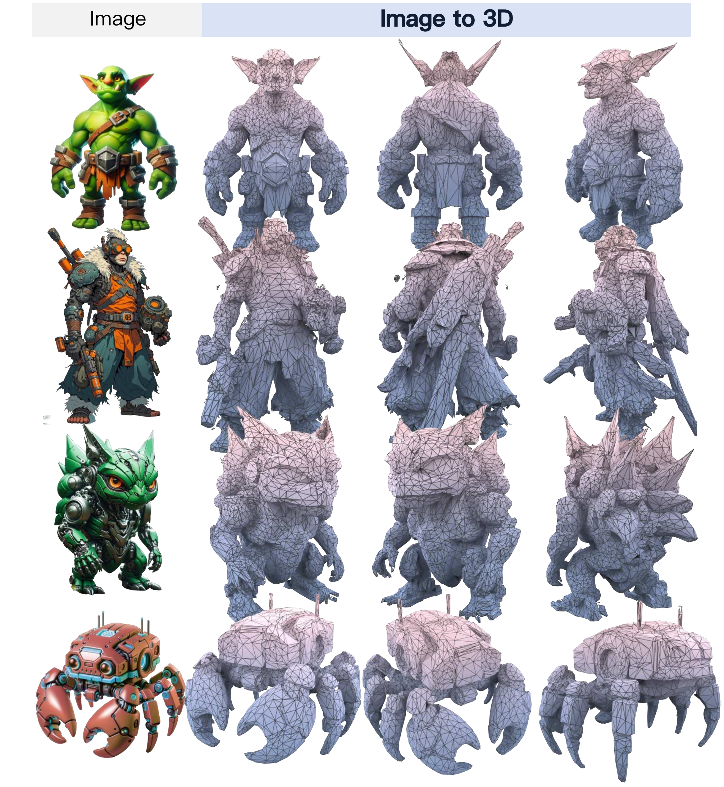
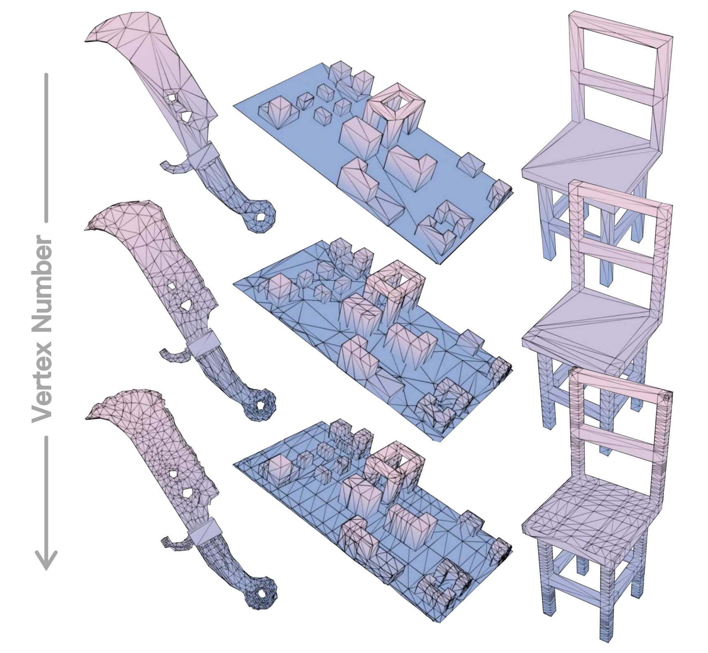

Topology as a first-class signal
Instead of decoding an implicit field and extracting a mesh afterward, LATO exposes vertex and edge structure to the generative pipeline.
ICML 2026
Huazhong University of Science and Technology · Peking University Independent Researcher · Technical University of Munich
In this paper, we introduce LATO, a novel topology-preserving latent representation that enables scalable, flow matching-based synthesis of explicit 3D meshes. LATO represents a mesh as a Vertex Displacement Field (VDF) anchored on surface, incorporating a sparse voxel Variational Autoencoder (VAE) to compress this explicit signal into a structured, topology-aware voxel latent.
To decapsulate the mesh, the VAE decoder progressively subdivides and prunes latent voxels to instantiate precise vertex locations. In the end, a dedicated connection head queries the voxel latent to predict edge connectivity between vertex pairs directly, allowing mesh topology to be recovered without isosurface extraction or heuristic meshing.
For generative modeling, LATO adopts a two-stage flow matching process, first synthesizing the structure voxels and subsequently refining the voxel-wise topology features. Compared to prior isosurface/triangle-based diffusion models and autoregressive generation approaches, LATO generates meshes with complex geometry, well-formed topology while being highly efficient in inference.
Paradigm

Core Design
Instead of decoding an implicit field and extracting a mesh afterward, LATO exposes vertex and edge structure to the generative pipeline.
Every sampled surface point carries displacements to the three vertices of its triangle, yielding continuous topology-aware supervision.
The sparse voxel latent encodes not only surface presence, but also vertex distribution and connectivity priors for explicit meshes.
A hierarchical decoder places vertices through subdivision and pruning, while a connection head predicts edges between vertex pairs.
Representation
VDF is the representation that lets LATO move from a surface signal to explicit topology. For a mesh \(\mathcal{M}=(\mathbf{V},\mathbf{F})\), take a point \(\mathbf{p}\) sampled on a triangular face \(\mathbf{f}=[f_0,f_1,f_2]\). Instead of assigning a discrete vertex/edge/face label, LATO records the displacements from \(\mathbf{p}\) to the three vertices of that face.
This makes topology learnable as a dense continuous field: near-zero displacements localize vertices, while changes in the displacement triplet reveal edges between vertex pairs. The resulting point feature is voxelized and pooled into T-Voxels for scalable generation.
VDF definition
The VAE input at each sampled point is \(\mathbf{x}_k=[\mathbf{p}_k,\mathcal{F}(\mathbf{p}_k),\mathbf{n}(\mathbf{p}_k)]\), combining position, VDF offsets, and surface normal.
Pipeline
LATO turns surface-anchored VDF samples into topology-aware T-Voxels, then decodes explicit vertices and edges through a sparse hierarchical pipeline.

Voxelize surface VDF samples with positions and normals, then compress the pooled signal into compact T-Voxels.
Subdivide and prune latent voxels to place vertices; a connection head queries T-Voxels to recover edges directly.
Use two-stage flow matching: synthesize sparse structure first, then generate topology features before explicit decoding.
Application
LATO extends from object-level mesh generation to scene-scale urban synthesis by generating compositional block-wise building units.

Block-wise building units are generated as sparse T-Voxels, then assembled into a larger explicit city mesh.
Experiments
LATO produces explicit meshes with strong shape fidelity and more coherent topology across object and image-conditioned settings.




Reference
@article{zhao2026lato,
title={LATO: 3D Mesh Flow Matching with Structured TOpology Preserving LAtents},
author={Zhao, Tianhao and Zhang, Youjia and Long, Hang and Zhang, Jinshen and Li, Wenbing and Yang, Yang and Zhang, Gongbo and Hladk{\`y}, Jozef and Nie{\ss}ner, Matthias and Yang, Wei},
journal={arXiv preprint arXiv:2603.06357},
year={2026}
}